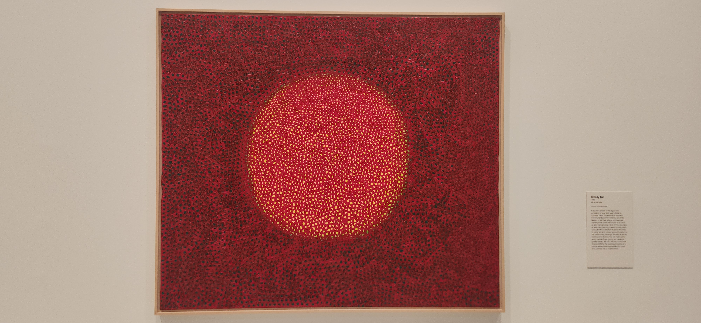
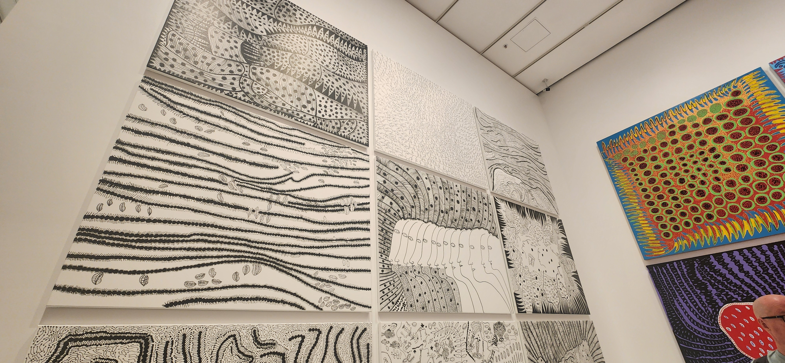
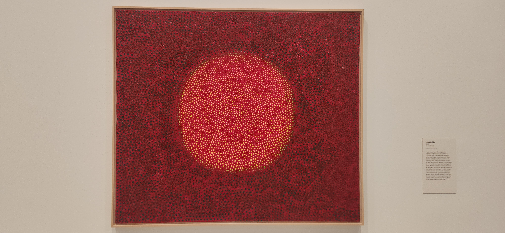
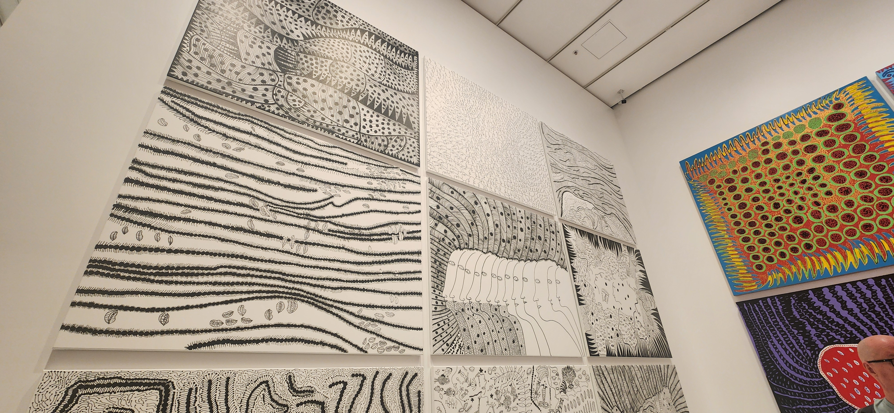

- Week 04: NGV Visit
We visited Yayoi Kusama's exhibition at the NGV, she often illustrates swith lines and circles, creating many stunning artworks.
Below are some of the artworks that I admire.
 



Overall, I really enjoyed exploring Yayoi Kusama's work at the NGV. Her distinctive use of circles and irregular lines creates
a stunning visuals that oddly promotes geometric harmony, where chaos and order coexist. This exhibition greatly inspired me to
incorporate circles and lines into my interactive designs, creating geometric beauties.
- Week 05: Slave To The algorithm
Some of my activities are to be decided by a flip of the coin, this includes:
/ Take the tram or the train
/ To wear jeans or sport pants
/ To wear shorts or long sleeves
/ To wear black or white
/ Drink water or tea
Here are some of the results:
/ I took the trams
I really enjoyed these activities, as they offered a fresh perspective of how we live our daily lives. In our digital age determined
by algorithm, this allowed me to experience the paradoxical nature of how restrictive algorithm can feel, while simultaneously
providing millions of different possibilites.
- Week 05: Kusama inspired P5 sketch
Using P5.js, I draw a potrait inspired by Kusama's stunning works. Her work often portrays circle in monochromic color, but as I
want to add my own elemet into the portrait, I only left the face in simple color, but drew my hair and body with numerous circles
of different bright colors
- Week 06: Sorting
We attempted to learn the power of sorting through a simple exercise where we have to sort our own belongings. For our group,
we decided to sort by "How effective it is as a self-defense weapon". We decided that a metalic water bottle would be the best,
followed by heavy laptops, then sharp pens and keys.
From this, I have learnt the strength in creative sorting. As different criteria of sorting can lead to infinite combination, ordering
and grouping, breathing fresh new ideas to a pre-existing group of entities. While I ultimately did not utilize sorting in my final work,
I still find this exercise to be extremely insightful, as it allows me to think outside of the box, and come up with different method
of using a pre-existing techniques.